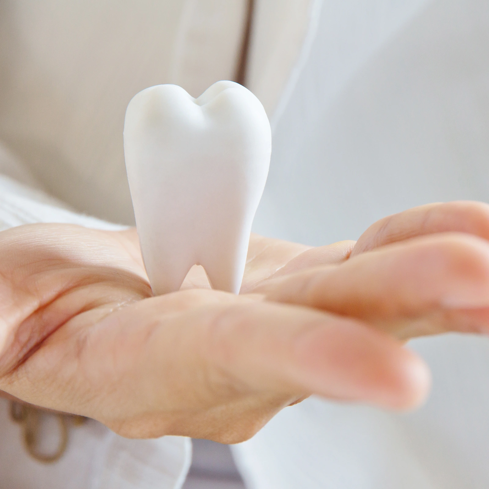
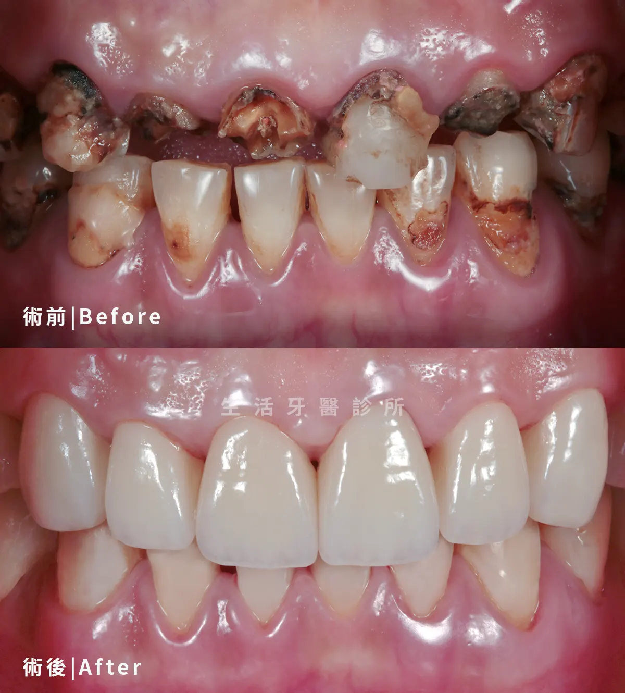
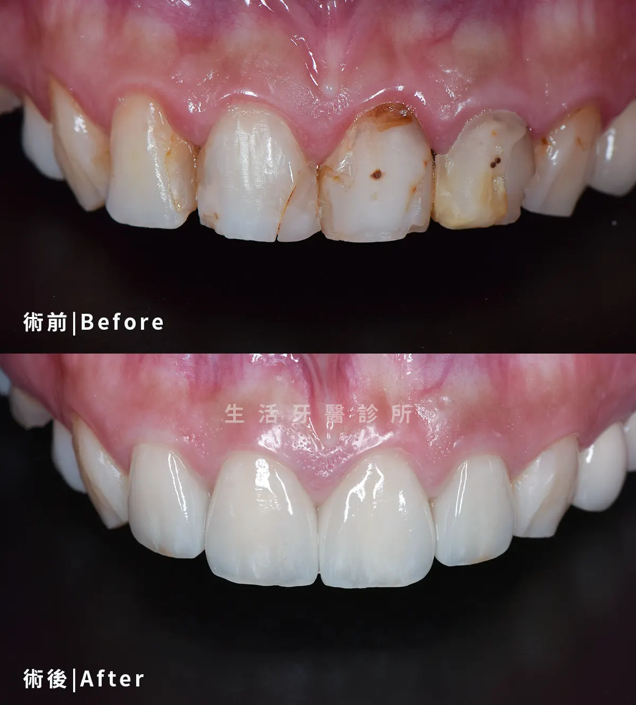
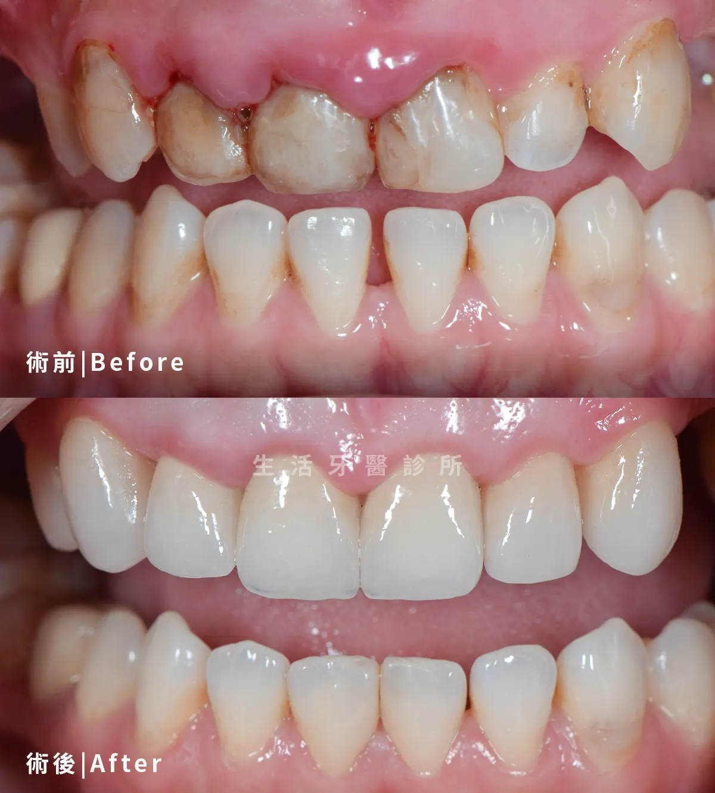
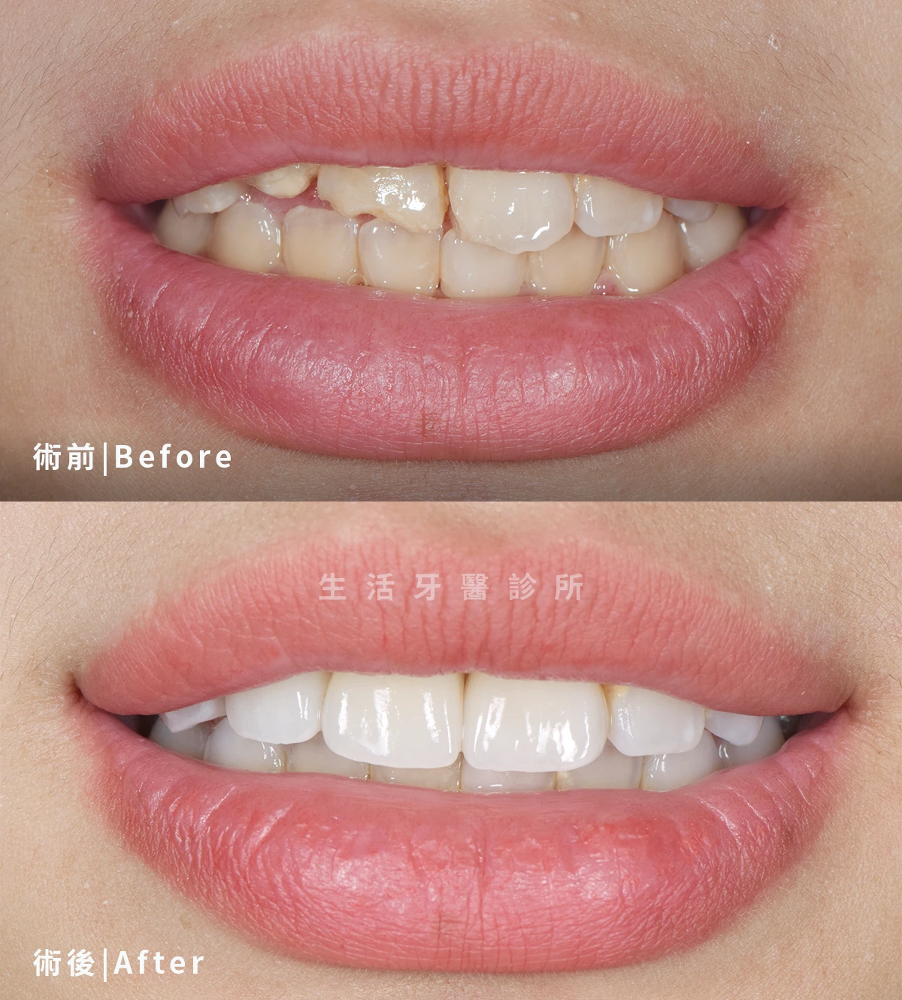

全瓷冠 × 4 顆
前齒比例調整，提升整體笑容質感
依照患者原本牙齒條件與期待，調整前牙形態、亮度與微笑線，讓修復後的笑容更自然耐看。
以前牙美學比例、自然色澤與細緻修復重塑笑容
全瓷冠與陶瓷貼片不只是讓牙齒變白，也需要評估臉型、唇齒比例、牙齦線與咬合狀態。 生活牙醫透過醫師評估與個人化設計，協助患者找回自然、協調且耐看的微笑。

全瓷冠與陶瓷貼片實際案例分享，實際治療方式仍需由醫師評估口腔條件、骨質、咬合與全身健康狀況後規劃。








想了解自己的狀況適合哪一種治療方式，可以先預約初診評估。生活牙醫會依照個人需求安排合適醫師協助規劃。